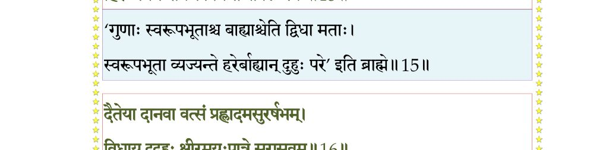
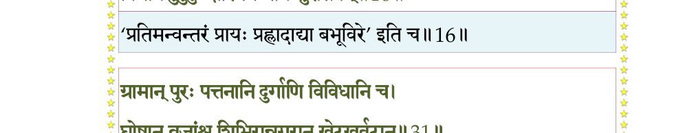
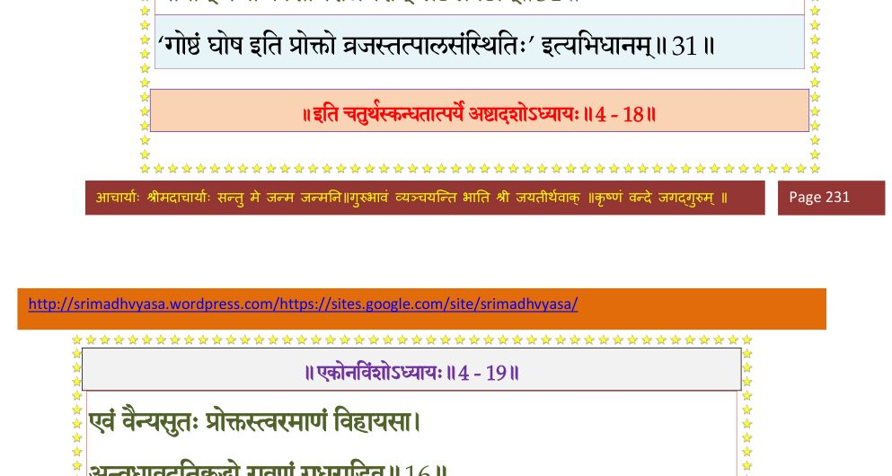

स्कन्ध 4 · अध्याय 18
श्लोक १
मैत्रेय उवाच–
इत्थं पृथुमभिष्टूय रुषा प्रस्फुरिताधरम् ।
पुनराहावनिर्भीता संस्थभ्यात्मानमात्मना।। १ ।।
इत्थं पृथुमभिष्टूय रुषा प्रस्फुरिताधरम् ।
पुनराहावनिर्भीता संस्थभ्यात्मानमात्मना।। १ ।।
श्लोक २
सन्नियच्छ विभो मन्युं विबोध श्रावितं च मे ।
सर्वतः सारमादत्ते यथा मधुकरो बुधः।। २ ।।
सर्वतः सारमादत्ते यथा मधुकरो बुधः।। २ ।।
श्लोक ३
अस्मिंल्लोकेऽथवाऽमुष्मिन् मुनिभिस्तत्त्वदर्शिभिः ।
दृष्टा योगाः प्रयुक्ताश्च पुंसां श्रेयःप्रसिद्धये।। ३ ।।
दृष्टा योगाः प्रयुक्ताश्च पुंसां श्रेयःप्रसिद्धये।। ३ ।।
श्लोक ४
तानातिष्ठति यः सम्यगुपायान् पूर्वदर्शितान् ।
अपरः श्रद्धयोपेत उपायान् विन्दतेऽञ्जसा।। ४ ।।
अपरः श्रद्धयोपेत उपायान् विन्दतेऽञ्जसा।। ४ ।।
श्लोक ५
ताननादृत्य योऽविद्वानर्थानारभते स्वयम् ।
तस्य व्यभिचरन्त्यर्थाः प्रारब्धाश्च पुनः पुनः।। ५ ।।
तस्य व्यभिचरन्त्यर्थाः प्रारब्धाश्च पुनः पुनः।। ५ ।।
श्लोक ६
पुरा सृष्टाश्चौषधयो ब्राह्मणाय विशांपते ।
भुज्यमाना मया दृष्टा असद्भिरधृतव्रतैः।। ६ ।।
भुज्यमाना मया दृष्टा असद्भिरधृतव्रतैः।। ६ ।।
श्लोक ७
अपालिता नादृतास्ता भवद्भिर्लोकपालकैः ।
चौरीभूतेऽथ लोकेऽहं यज्ञार्थेऽग्रसमौषधीः।। ७ ।।
चौरीभूतेऽथ लोकेऽहं यज्ञार्थेऽग्रसमौषधीः।। ७ ।।
श्लोक ८
नूनं ता वीरुधः क्षीणा मयि कालेन भूयसा ।
तत्र दृष्टेन योगेन भवानादातुमर्हति।। ८ ।।
तत्र दृष्टेन योगेन भवानादातुमर्हति।। ८ ।।
श्लोक ९
वत्सं कल्पय मे वीर येनाऽहं वत्सला तव ।
धोक्ष्ये क्षीरमयान् कामाननुरूपं च दोहनम्।। ९ ।।
धोक्ष्ये क्षीरमयान् कामाननुरूपं च दोहनम्।। ९ ।।
श्लोक १०
दोग्धारं च महाबाहो भूतानां भूतभावन ।
अन्नमीप्सितमूर्जस्वद् भगवान् वाञ्छते यदि।। १० ।।
अन्नमीप्सितमूर्जस्वद् भगवान् वाञ्छते यदि।। १० ।।
श्लोक ११
समां च कुरु मां राजन् देववृष्टं यथा पयः ।
अपर्तावपि भद्रं ते उपावर्तेत मां विभो।। ११ ।।
अपर्तावपि भद्रं ते उपावर्तेत मां विभो।। ११ ।।
श्लोक १२
इति प्रियहितं वाक्यं भुव आदाय भूपतिः ।
तथा चकार सर्वत्र सारमाददते बुधाः।। १२ ।।
तथा चकार सर्वत्र सारमाददते बुधाः।। १२ ।।
श्लोक १३
वत्सं कृत्वा मनुं पाणावदुहत् सकलोषधीः ।
ततोऽपरे यथाकामं दुदुहुः पृथुभाविताम्।। १३ ।।
ततोऽपरे यथाकामं दुदुहुः पृथुभाविताम्।। १३ ।।
श्लोक १४
ऋषयो दुदुहुर्देवीमिन्द्रियेष्वथ सत्तमाः ।
वत्सं बृहस्पतिं कृत्वा पयश्छन्दोमयं शुचि।। १४ ।।
वत्सं बृहस्पतिं कृत्वा पयश्छन्दोमयं शुचि।। १४ ।।
श्लोक १५
कृत्वा वत्सं सुरगणा इन्द्रं सोममदूदुहन् ।
हिरण्मयेन पात्रेण वीर्यमोजो बलं पयः।। १५ ।।
हिरण्मयेन पात्रेण वीर्यमोजो बलं पयः।। १५ ।।
भागवततात्पर्यनिर्णय

श्लोक १६
दैतेया दानवा वत्सं प्रह्लादमसुरर्षभम् ।
विधाय दुदुहुः क्षीरमयःपात्रे सुरासवम्।। १६ ।।
विधाय दुदुहुः क्षीरमयःपात्रे सुरासवम्।। १६ ।।
भागवततात्पर्यनिर्णय

श्लोक १७
गन्धर्वाप्सरसोऽधुक्षन् पात्रे पद्ममये पयः ।
वत्सं विश्वावसुं कृत्वा गान्धर्वं मधु सौभगम्।। १७ ।।
वत्सं विश्वावसुं कृत्वा गान्धर्वं मधु सौभगम्।। १७ ।।
श्लोक १८
वत्सेन पितरोऽर्यम्णा कव्यं क्षीरमधुक्षत ।
आमपात्रे महाभाग श्रद्धया श्राद्धदेवताः।। १८ ।।
आमपात्रे महाभाग श्रद्धया श्राद्धदेवताः।। १८ ।।
श्लोक १९
प्रकल्प्य वत्सं कपिलं सिद्धाः सङ्कल्पनामयीम् ।
सिद्धिं नभसि विद्यां च ये च विद्याधरादयः।। १९ ।।
सिद्धिं नभसि विद्यां च ये च विद्याधरादयः।। १९ ।।
श्लोक २०
अन्ये च मायिनो मायामन्तर्धानगतात्मना ।
मयं प्रकल्प्य वत्सत्वे दुदुहुर्धारणामयीम्।। २० ।।
मयं प्रकल्प्य वत्सत्वे दुदुहुर्धारणामयीम्।। २० ।।
श्लोक २१
यक्षरक्षांसि भूतानि पिशाचाः पिशिताशनाः ।
भूतेशवत्सा दुदुहुः कपाले क्षतजासवम्।। २१ ।।
भूतेशवत्सा दुदुहुः कपाले क्षतजासवम्।। २१ ।।
श्लोक २२
तथाऽहयो दन्दशूकाः सर्पा नागाश्च तक्षकम् ।
वत्सं विधाय दुदुहुर्बिलपात्रे विषं पयः।। २२ ।।
वत्सं विधाय दुदुहुर्बिलपात्रे विषं पयः।। २२ ।।
श्लोक २३
पशवो यवसं क्षीरं वत्सं कृत्वा च गोवृषम् ।
अरण्यपात्रे चाधुक्षन् मृगेन्द्रेण च दंष्ट्रिणः।। २३ ।।
अरण्यपात्रे चाधुक्षन् मृगेन्द्रेण च दंष्ट्रिणः।। २३ ।।
श्लोक २४
क्रव्यादाः प्राणिनः क्रव्यं दुदुहुः स्वकलेवरे ।
सुपर्णवत्सा विहगाश्चरं चाचरमेव च।। २४ ।।
सुपर्णवत्सा विहगाश्चरं चाचरमेव च।। २४ ।।
श्लोक २५
वटवत्सा वनस्पतयः पृथग्रसमयं पयः ।
गिरयो हिमवद्वत्सा नानाधातून् स्वसानुषु।। २५ ।।
गिरयो हिमवद्वत्सा नानाधातून् स्वसानुषु।। २५ ।।
श्लोक २६
सर्वे स्वमुख्यवत्सेन स्वे स्वे पात्रं पृथक् पृथक् ।
सर्वकामदुघां पृथ्वीं दुदुहुः पृथुभाविताम्।। २६ ।।
सर्वकामदुघां पृथ्वीं दुदुहुः पृथुभाविताम्।। २६ ।।
श्लोक २७
एवं पृथ्वादयः पृथ्वीमदुहन् स्वन्नमात्मनः ।
दोहवत्सादिभेदेन क्षीरभेदं कुरुद्वह।। २७ ।।
दोहवत्सादिभेदेन क्षीरभेदं कुरुद्वह।। २७ ।।
श्लोक २८
ततो महीपतिः प्रीतः सर्वकामदुघां पुथुः ।
दुहितृत्वे चकारेमां प्रेम्णा दुहितृवत्सलः।। २८ ।।
दुहितृत्वे चकारेमां प्रेम्णा दुहितृवत्सलः।। २८ ।।
श्लोक २९
चूर्णयन् स्वधनुःकोट्या गिरिकूटानि राजराट् ।
भूमण्डलमिदं वैन्यः प्रायश्चक्रे समं विभुः।। २९ ।।
भूमण्डलमिदं वैन्यः प्रायश्चक्रे समं विभुः।। २९ ।।
श्लोक ३०
अथास्मिन् भगवान् वैन्यः प्रजानां वृत्तिदः पिता ।
निवासान् कल्पयाञ्चक्रे तत्र तत्र यथार्हतः।। ३० ।।
निवासान् कल्पयाञ्चक्रे तत्र तत्र यथार्हतः।। ३० ।।
श्लोक ३१
ग्रामान् पुरः पत्तनानि दुर्गाणि विविधानि च ।
घोषान् व्रजांश्च शिबिरान् नगरान् खेटखर्वटान्।। ३१ ।।
घोषान् व्रजांश्च शिबिरान् नगरान् खेटखर्वटान्।। ३१ ।।
भागवततात्पर्यनिर्णय

श्लोक ३२
प्राक् पृथोरिह नैवैषा पुरग्रामादिकल्पना ।
यथासुखं वसन्ति स्म तत्र तत्राकुतोभयाः।। ३२ ।।
यथासुखं वसन्ति स्म तत्र तत्राकुतोभयाः।। ३२ ।।
।। इति श्रीमद्भागवते चतुर्थस्कन्धे अष्टादशोऽध्यायः ।।